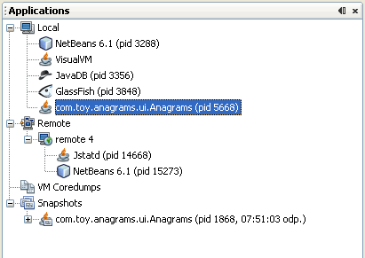

| Documentation Contents |
Using the Applications WindowWhen you start Java VisualVM, the Applications window is visible in the left side of the Java VisualVM window. The Applications window uses a tree structure to enable you to quickly view the applications that are running on local and connected remote JVM software instances. The Applications window also displays core dumps and application snapshots. Applications Window NodesThe Application window has nodes and sub-nodes that you can expand to view running applications and saved files. For most nodes in the Applications window, you can view additional information and perform actions by right-clicking a node and choosing an item from the popup menu. The actions available in the popup menu vary according to the node. The Applications window has the following primary nodes: Local NodeThe Local node displays the name and process IDs (PID) of Java applications that are running on the same system as Java VisualVM. When you launch Java VisualVM and expand the Local node, Java VisualVM automatically displays the currently running Java applications. Java VisualVM is always listed as one of the local applications. When a new local Java application is launched, a node for that application appears under the Local node. The application node disappears when the application terminates. If you use Java VisualVM to take thread dumps, heap dumps or profiling snapshots of an application, they are displayed as sub-nodes below the node for that application. You can right-click a dump or snapshot sub-node to save it to your local system. You can collect and archive all the information collected about an application and save it as an application snapshot. For more information about how to view data about local applications, see the following pages: Remote NodeWhen Java VisualVM connects to a remote host, the remote host is listed as a node under the Remote node. When connected to a remote host, you can expand the node for the remote host to see the Java applications that are running on that host. When a Java application is launched on the remote host, a node for that application is displayed under the remote host node. You need to explicitly add the location of remote hosts if you want Java VisualVM to be able to connect to the host. Once a remote host is added, Java VisualVM persists the address of the remote host and will make a connection to the host each time Java VisualVM is started. If you do not want Java VisualVM to connect to the host on startup, you should right-click the remote host node and choose Remove before quitting Java VisualVM. Note: To retrieve and display information on applications running on the remote host, the jstatd utility needs to be running on the remote host. To start the utility, type jstatd on the command line. The jstatd utility is included as part of the Java Development Kit (JDK) version 6. For more information about how to view data about remote applications, see the following pages: VM CoredumpsThe VM Coredumps node lists open core dump binary files when you open the files in Java VisualVM. A core dump is a binary file that contains information about the runtime status of the machine at the time the core dump was taken. If you have a core dump you can then extract an overview of the system properties, a heap dump and a thread dump. Note: The Core Dump node is only visible if Java VisualVM is running on Solaris or Linux. For more information, see the following document: SnapshotsThe Snapshots node lists any application snapshots that are saved in the Java VisualVM userdir until they are explicitly deleted. An application snapshot captures the collected heap dumps, thread dumps and profiler snapshots of an application at the moment the snapshot is taken. You can expand the application snapshot node to see the data collected in the snapshot. You can right-click an application snapshot node or any of the items listed under the node to open a popup menu enabling you to open, save, delete and rename the selected item. For more information about taking and saving snapshots, see the following document: |
Copyright © 1993, 2011, Oracle and/or its affiliates. All rights reserved. Please send comments using this Feedback page. |
Java Technology |